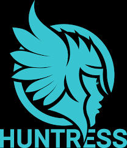
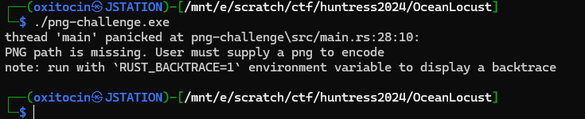
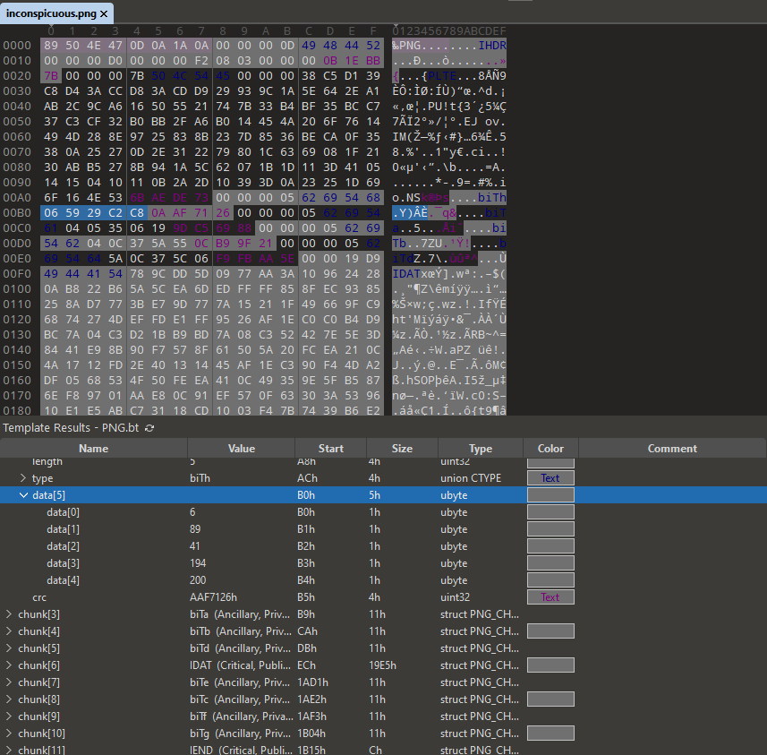
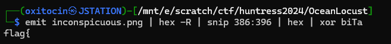

Challenge Name: ocean_locust
Category: Malware
Author: @JohnHammond
Challenge Description:
Wow-ee zow-ee!! Some advanced persistent threats have been doing some tricks with hiding payloads in image files!
Artifact Files:
Approach
After unzipping the archive, we are presented with two executables and an image file, "inconspicuous.png".
I started by running both executables and noted that the binaries are written in rust, and that they both required an image and flag as input. Because I have no clue how to reverse rust, I decided to take a look at the image file.
I took a look at the png image in 010 editor, and noticed a handful of ancillary data chunks, with types "biTa" through "biTh". These chunks all contained 5 bytes of data, which made me think that they were XORed, with the key being the name of the chunk.
I decided to test my theory by decoding the first chunk in alphabetical order, XORing its data against the chunk type "biT[letter]", and was pleased to see that the first few characters of the flag were revealed.
I did this using binary refinery, emitting the bytes, carving out the hex structure for the biTa chunk, and then XORing it against "biTa".
I wrote a script to automate the process of decoding the chunks, and after a few iterations, the flag was revealed.
import struct
def parse(data):
decoded_data = b""
for letter in range(ord("a"), ord("h") + 1): # biTa to biTh
chunk_name = f"biT{chr(letter)}".encode()
if chunk_name in data:
start_index = data.index(chunk_name) + len(chunk_name)
additional_data = data[start_index : start_index + 6]
unpacked_data = struct.unpack("6B", additional_data)
decoded_data += bytes(
a ^ b for a, b in zip(unpacked_data[:5], [*chunk_name, chunk_name[0]])
)
print(decoded_data.strip(b"\xaa").decode()) # some padding bytes at the end
parse(open("inconspicuous.png", "rb").read())
Flag:flag{fec87c690b8ec8d65b8bb10ee7bb65d0}
Reflections
Initially I was afraid that I would have to reverse rust, which sent me into cold sweats, so I was happily surprised when I was able to grab the flag directly from the image :)